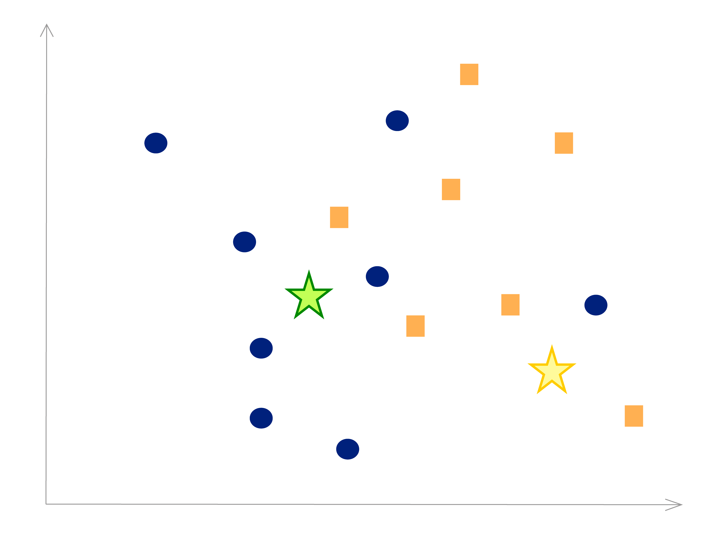

K-Nearest Neighbor Klassifikation
Gegeben seien die folgenden Datenpunkte im zweidimensionalen Raum, die zwei verschiedenen Klassen angehören (oranges Rechteck / blauer Kreis):

1. Welcher der beiden Klassen wird der neue Datenpunkt (gelber Stern) nach dem K-Nearest-Neigbor-Verfahren mit K=3 zugeordnet?
Oranges Rechteck
Blauer Kreis
2. Welcher der beiden Klassen wird der neue Datenpunkt (grüner Stern) nach dem K-Nearest-Neigbor-Verfahren mit K=5 zugeordnet?
Oranges Rechteck
Blauer Kreis